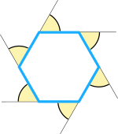

Exterior Angles of Polygons
The Exterior Angle is the angle between any side of a shape,
and a line extended from the next side.

Another example:

When we add up the Interior Angle and Exterior Angle we get a straight line 180°. They are "Supplementary Angles".
Polygons
A Polygon is any flat shape with straight sides
The Exterior Angles of a Polygon add up to 360°
In other words the exterior angles add up to one full revolution.
Press Play button to see.
(Exercise: try this with a square, then with some interesting polygon you invent yourself.)
Note: This rule only works for simple polygons.
| Here is another way to think about it: Each lines changes direction until we eventually get back to the start: |
 |